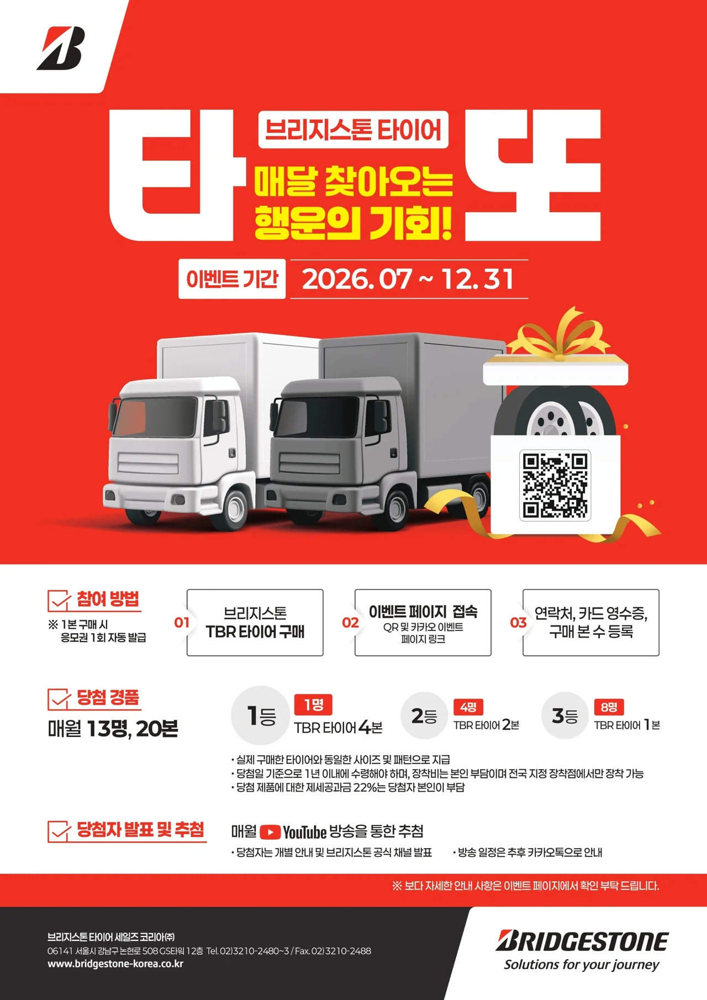
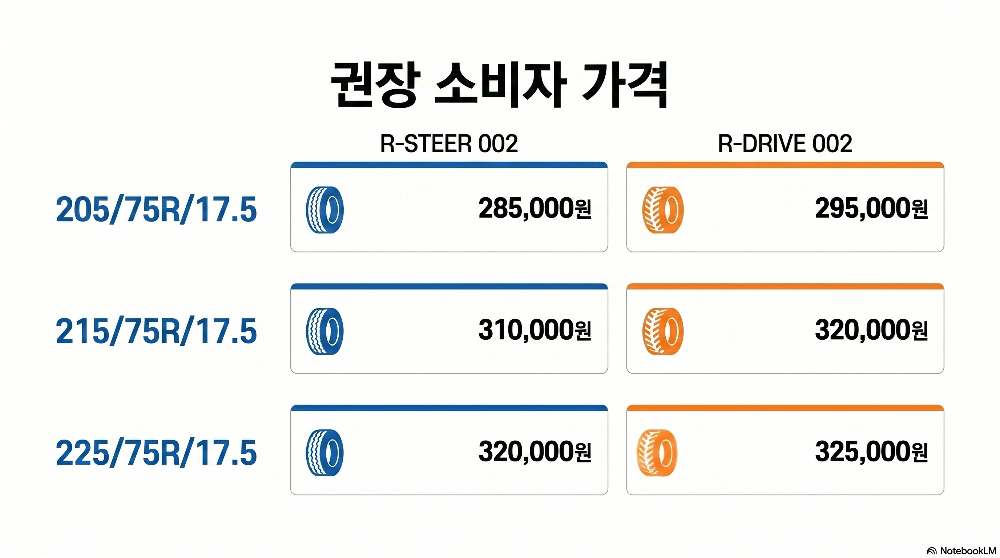

2026년 6호 발행
타또 이벤트,
첫 추첨 진행
지난 호에 공지된 '타또(타이어 로또)' 이벤트의 첫 번째 추첨이 진행됩니다. 현장 대리점 사장님들께서는 이벤트 추첨 및 발표 일정을 고객분들께 명확히 안내해 주시고, 이를 기반으로 한 적극적인 타이어 세일즈를 전개해 주시기 바랍니다.
이달의 핵심 기획
매달 찾아오는 행운, '타또' 이벤트 추첨 안내

8월 추첨 일정 및 고객 안내 사항
- ▶ 추첨 방송 녹화: 8월 12일 (수)
- ▶ 당첨자 발표: 8월 14일 (금) 유튜브 채널 공식 공개
[현장 영업 스크립트]
"고객님, 지난달 구매하신 타이어 영수증 등록하셨습니까? 8월 14일 타또 첫 당첨자가 유튜브를 통해 발표됩니다. 매장에 비치된 QR 코드로 간단하게 응모 가능하니, 이번 기회에 타이어 교체하시고 이벤트 혜택 반드시 챙겨가십시오."
"고객님, 지난달 구매하신 타이어 영수증 등록하셨습니까? 8월 14일 타또 첫 당첨자가 유튜브를 통해 발표됩니다. 매장에 비치된 QR 코드로 간단하게 응모 가능하니, 이번 기회에 타이어 교체하시고 이벤트 혜택 반드시 챙겨가십시오."
RD/RS002 핵심 세일즈 포인트

안전과 경제성을 모두 잡은 완벽한 밸런스! 고객 설득 시 바로 활용할 수 있는 핵심 세일즈 포인트입니다.
💡 사장님 핵심 영업 포인트:
안전 측면에서는 고른 타이어 마모로 오래 유지되는 주행 안정성을, 경제적 측면에서는 편마모 감소에 따른 긴 교체 주기와 압도적인 유지비(TCO) 절감을 적극 어필하십시오. 장거리 기사님들의 비용 부담을 덜어주는 최고의 솔루션입니다.
안전 측면에서는 고른 타이어 마모로 오래 유지되는 주행 안정성을, 경제적 측면에서는 편마모 감소에 따른 긴 교체 주기와 압도적인 유지비(TCO) 절감을 적극 어필하십시오. 장거리 기사님들의 비용 부담을 덜어주는 최고의 솔루션입니다.
타이어 권장 소비자 가격표 안내

상용차 업계 최신 동향 및 세일즈 포인트
[안전 규제]
고속道 화물차 3대 중 1대, 너트 풀려도 운행
화물차 '바퀴 빠짐' 사고 예방을 위해 휠 너트 인디케이터 장착 및 일상 점검의 중요성이 강하게 대두되고 있습니다.
[영업 포인트] 휠 너트 점검 및 하체 수리 차 방문한 고객에게 타이어 마모 상태를 함께 진단해 주십시오. 견고한 내구성을 갖춘 브리지스톤 신품으로의 선제적 교체 필요성을 논리적으로 설명하십시오.
기사 원문 보기
[서비스 동향]
상용차 제조사, 하절기 차량 무상 점검 실시
본격적인 폭염을 대비하여 주요 상용차 제조사들이 차량 예방 정비를 위한 하절기 무상 점검 캠페인을 전개하고 있습니다.
[영업 포인트] 대리점 자체 무상 공기압 점검 서비스를 병행하여 고객 방문을 유도하십시오. 점검 과정에서 발견된 편마모나 이상 징후를 바탕으로 RD/RS002의 내구성을 어필하십시오.
기사 원문 보기
[물류 기술]
CJ대한통운, 대구 도심서 자율주행 물류 서비스 본격화
오는 10월부터 대구 도심 및 미들마일 구간에서 11.5톤 화물차를 투입한 자율주행 화물운송 서비스가 정식 운영됩니다.
[영업 포인트] 물류 시스템의 자동화 및 고도화는 멈춤 없는 차량 가동률을 요구합니다. 장기적인 운행 안정성을 보장하는 브리지스톤 타이어의 제품 신뢰도를 강조하십시오.
기사 원문 보기
[시장 분석]
화물운송시장 '이중 고령화' 운전자도 늙고 차량도 늙는다
신규 인력 유입 감소로 운전자의 평균 연령이 61세를 초과했으며, 15년 이상 노후 화물차 비중 또한 지속 증가하고 있습니다.
[영업 포인트] 노후 차량일수록 유지 보수 비용 관리가 핵심입니다. 교체 빈도를 줄여 장기적인 정비 부담을 완화하는 브리지스톤 타이어의 경제성(TCO 절감)을 최우선으로 제안하십시오.
기사 원문 보기
!
안전 보건 가이드
현장 작업 시 온열 질환 예방을 위한 가이드라인을 준수해 주시기 바랍니다. 브리지스톤 타이어 세일즈 코리아는 대리점의 원활한 세일즈 환경 조성을 위해 지속 지원하겠습니다.